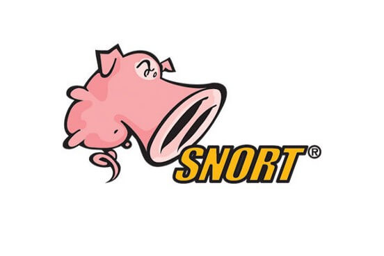

Snort 2: instalación y configuración

¿Qué es Snort?
Snort es el sistema de prevención/detección de intrusos de código abierto más importante del mundo. Snort utiliza una serie de reglas que permiten identificar actividades sospechosas en la red, utilizando estas reglas para buscar coincidencias con los paquetes encontrados en la red y generar alertas.
Definición IDS
IDS, sistema de detección de intrusos, o por sus siglas en inglés Intrusion Detection System, es una solución de monitoreo pasivo para la detección de posibles acciones o patrones sospechosos, incidentes anormales y violaciones de políticas de seguridad. Este es responsable por la generación de alertas por cada evento sospechoso.
Definición IPS
IPS, sistema de prevención de intrusos, o por sus siglas en inglés Intrusion Prevention System, es una solución de protección activa para la prevención de posibles acciones o patrones sospechosos, incidentes anormales y violaciones de políticas de seguridad. Este es responsable de detener/prevenir/terminar el evento sospechoso tan pronto se realiza la detección.
Instalación
Para la instalación de Snort, tomaremos como referencia el sistema operativo Debian.
Instalación desde repositorio:
sudo apt install snortFlags útiles
-V,--version- Este parámetro proporciona información sobre la versión de Snort.
-c- Identifica el archivo de configuración.
-T- Parámetro de autocomprobación de Snort, se puede probar la configuración de Snort con este parámetro.
-q- Modo silencioso, se usa para evitar que Snort muestre el banner predeterminado y la información sobre su configuración.
-d- Display the packet data payload (Application Layer).
-e- Display TCP/IP/UDP/ICMP headers (Second Layer/Data-Link Layer).
-i <if>- Este parámetro ayuda a definir una interfaz de red específica para escuchar/sniff. La interfaz por defecto es eth0.
-l- Logger mode, registro de destino y directorio de registro de alertas. La carpeta de logs por defecto para Snort es /var/log/snort.
-v- Verbosidad.
Iniciar Snort
Para iniciar Snort en modo sniffer (packet dump mode), y realizar el registro de los paquetes detectados, hacemos el llamado a Snort con las siguiente configuración.
snort -i wlan0 -vdePara iniciar Snort como un NIDS (Network Intrusion Detection System), debemos incluir el archivo de configuración y reglas al hacer nuestro llamado a Snort.
snort -vde -c /etc/snort/snort.confArchivo de configuración de Snort
El archivo de configuración de Snort es usado para especificar la configuración que queremos usar al momento de ejecutar Snort, este esta ubicado en /etc/snort/snort.conf.
Podemos abrir y modificar este archivo mediante el editor de texto nano.
nano /etc/snort/snort.confAquí puedes ver los 9 pasos para configurar Snort.
###################################################
# This file contains a sample snort configuration.
# You should take the following steps to create your own custom configuration:
#
# 1) Set the network variables.
# 2) Configure the decoder
# 3) Configure the base detection engine
# 4) Configure dynamic loaded libraries
# 5) Configure preprocessors
# 6) Configure output plugins
# 7) Customize your rule set
# 8) Customize preprocessor and decoder rule set
# 9) Customize shared object rule set
###################################################En este documento solo mencionaremos algunos de estos pasos, buscando realizar una configuración básica de Snort.
1) Set the network variables.
ipvar HOME_NET anyLa variable HOME_NET, representa la parte de nuestra red en la que confiamos y queremos proteger, esta variable puede ser solo una IP, una lista de IPs separadas por comas, una subnet en notación CIDR, o simplemente any.
La mejor práctica es asignar a la variable HOME_NET la subnet que estámos protegiendo en notación CIDR, en mi caso es la siguiente:
ipvar HOME_NET 192.168.0.0/24ipvar EXTERNAL_NET anyPara la variable EXTERNEL_NET, podemos asignarle todo lo que no sea HOME_NET, y esto lo hacemos anteponiendo el símbolo ! a la variableHOME_NET de la siguiente manera:
ipvar EXTERNAL_NET !$HOME_NET6) Configure output plugins
En esta sección podemos definir dónde y cómo se envían las alertas y registros (logs).
output unified2: esta línea es lo que Snort llama “unified logging”, este se encarga de registrar los paquetes completos y las alertas.
7) Customize your rule set
include $RULE_PATH/local.rulesEsta línea especifica la ruta de nuestras reglas personalizadas.
Para realizar una buena configuración y creación de reglas, es recomendable deshabilitar las reglas existentes, esto en parte porque pueden generar errores o ser una versión muy antigua que realmente no son muy efectivas contra los ataques actuales. Posterior a comentar las reglas que vienen por defecto o en su defecto eliminarlas, procedemos a guardar los cambios en el archivo de configuración de Snort.
Probar la correcta configuración de Snort.
Para realizar la comprobación de la correcta configuración del archivo snort.conf, podemos hacer uno de la bandera “-T”, la cual nos permite especificar el archivo de configuración con la bandera “-c” y tan solo con estos parámetros obtendremos una respuesta de test de configuración.
snort -T -c /etc/snort/snort.confEntendiendo la estructura de una regla
Para este capítulo, analizaremos unas de las reglas que se encuentran en el archivo scan.rules dentro de la carpeta de reglas de Snort /etc/snort/rules.
alert tcp $EXTERNAL_NET any -> $HOME_NET any (msg:"SCAN SYN FIN"; flow:stateless; flags:SF,12; reference:arachnids,198; classtype:attempted-recon; sid:624; rev:7;)Para un mejor análisis de esta regla, vamos a dividirla en dos partes, rule header y rule options.
Rule Header
alert tcp $EXTERNAL_NET any -> $HOME_NET anyalert: Acción, esta puede ser alert, log, o pass (drop).tcp: Protocolo del tráfico que la regla está buscando. Puede ser tcp, udp, y icmp.$EXTERNAL_NET: IP de origen o red de origen del paquete malicioso. Esta puede ser definida como una variable en el archivo de configuración de Snort en /etc/snort/snort.conf.any: Puerto de origen. Este puede ser un único puerto (22), múltiples puertos (22,80), o un rango de puertos (22:100).->: Dirección del tráfico. En este caso, estamos buscando tráfico originado desde EXTERNAL_NET hacia HOME_NET. Otra opcion para este parámetro es “<>”.$HOME_NET: IP de destino del tráfico. Esta puede ser definida como una variable en el archivo de configuración de Snort en /etc/snort/snort.conf.any: Puerto de destino. Este puede ser un puerto específico (22), o una variable conteniendo una lista de puertos.
Nota: recuerda que puedes negar distintos parámetros, incluidos los puertos, anteponiendo el símbolo !. De esta forma con !22, quedará especificado que son todos los puertos excepto el puerto 22.
Rule Options
Esta segunda parte de la regla se puede diferenciar fácilmente ya que está encerrada dentro de paréntesis y está compuesta por una palabra clave, dos puntos y un argumento. Ejemplo:
keyword:argumentRule Option:
(msg:"SCAN SYN FIN"; flow:stateless; flags:SF,12; reference:arachnids,198; classtype:attempted-recon; sid:624; rev:7;)msg: Este es el mensaje que se envía al sysadmin si la regla se cumple y es activada. El mensaje en este caso es “SCAN SYN FIN”.flow: Esta opción permite a la regla verificar el flujo del tráfico. Esta opción puede serestablished(Conexión TCP establecida),not established(Conexión TCP no establecida),stateless(Conexión establecidas y no establecidas). A continuación dejamos las distintas opciones que pueden ser usadas, estas fueron sacadas del manual oficial de Snort.flags: Esta sección es para las banderas TCP.
En este caso la regla está buscando tráfico que contenga la bandera SYN y FIN (SF) y adicionalmente tiene los dos bits reservados (12) en la bandera.F - FIN - Finish (LSB in TCP Flags byte) S - SYN - Synchronize sequence numbers R - RST - Reset P - PSH - Push A - ACK - Acknowledgment U - URG - Urgent C - CWR - Congestion Window Reduced (MSB in TCP Flags byte) E - ECE - ECN-Echo (If SYN, then ECN capable. Else, CE flag in IP header is set) 0 - No TCP Flags Setreference: Esta sección es utilizada para extender la información y hacer referencia a una base de datos de seguridad, en este caso podemos obtener más información sobre este ataque en la base de datos de arachnids, attack 198.classtype: Todas las reglas están clasificadas en numerosas categorías para ayudar a entender al administrador el tipo de ataque que fue realizado. En el caso particular del ejemplo, el ataque fue clasificado como un “attempted-recon”.sid: (Signature ID) este es el identificador de la regla dentro de Snort. Cada regla debe tener un ID único. En este caso, el ID de la regla es “624”.rev: A medida que se revisan, mejoran o modifican las reglas, se les asigna un número de revisión. En el caso particular del ejemplo, esta es la revisión “7” de esta regla.content: En esta opción se especifica el contenido que se intenta encontrar en el paquete y lanzar la acción especificada al inicio de la regla. Estos pueden especificarse de distintas formas.content: "CONTENIDO" content: "| 54 14 4C 4F 53 | Intelligence" content: !"SNORT"